Contents
%>>>>>>>>>>>>>>>>>>>>>>>>>>>>>>>>>>>>>>>>>>>>>>>>>>>>>>>>> % HW2.m % Author : Zach Dischner % Date : 9/15/2013 % Description : Matlat script for all calculations required for % ASEN 5090 Homework 2 % % __...____________________ , % `(\ [ ===NCC-1700===--|__|) ___..--"_`--.._____ % `"""""""""""""""""| |""` [_""_-___________"_/ % | | /..../`'-._.-'` % ____| |__/::..'_ % |\ ".`"` '_____//\ % `"'-. """"" \\/ % `""""""""""` % <<<<<<<<<<<<<<<<<<<<<<<<<<<<<<<<<<<<<<<<<<<<<<<<<<<<<<<< clc;clear all;close all screen_size = get(0,'ScreenSize'); sw = screen_size(3); % Screen Width sh = screen_size(4); % Screen Height figColor = [0.99 0.99 0.98];
Problem 1
% 1a-PRN19 %--------------------------------------------- sat = 19; PRN(sat,:) = PRNGenerator(sat); figure(); subplot(1,2,1) plotBinaryWave(PRN(sat,1:16)); legendStr=['PRN ',num2str(sat)]; xlabel('Bit Number');ylabel('C/A Bit Value'); legend(legendStr,'location','best');title('First 16 bits') subplot(1,2,2) plotBinaryWave(PRN(sat,end-16:end),[length(PRN(sat,:))-16:length(PRN(sat,:))]); xlabel('Bit Number');ylabel('C/A Bit Value'); legend(legendStr,'location','best');title('Last 16 bits') fprintf('>>>>>>>>>>>>>>>>>>>>>>>> Problem 1 >>>>>>>>>>>>>>>>>>>>>>>>>>>>>'); fprintf('\nProblem 1a:\n') fprintf('\tFirst 16bits of PRN %d''s chip code is: \n\t\tPRN ==> [%s...]\n\n',... sat,num2str(PRN(sat,1:16))); set(gcf,'Color',figColor, 'Position',[10+gcf*10 sh-600-gcf*10 1000 500]) subplotsqueeze(gcf,1.4,1) %--------------------------------------------- % 1b-PRN19 epoch 1024-2046 %--------------------------------------------- figure() PRN19_9 = PRNGenerator(19,1024); subplot(2,1,1) plotBinaryWave(PRN19_9(1:20)) xlabel('Bit Number');ylabel('C/A Bit Value'); title('PRN19 at 1024-2046 Epoch') subplot(2,1,2) plotBinaryWave(PRN(19,(1:20))) xlabel('Bit Number');ylabel('C/A Bit Value'); title('PRN19 at 0-1023 Epoch') set(gcf,'Color',figColor, 'Position',[10+gcf*10 sh-600-gcf*10 1000 500]) fprintf('\nProblem 1b:\n') fprintf('\tThe difference between the two epochs is that the C/A code generated') fprintf('\n\tat the 0-1024 epoch is 1 bit shifted right 1 bit (in plot space), relative to\n') fprintf('\tthe C/A code generated at epoch 1024-2046\n') %--------------------------------------------- % 1c-d: Redo part a for satellite 5,25 %--------------------------------------------- for sat = [25,5] PRN(sat,:) = PRNGenerator(sat); figure(); subplot(1,2,1) plotBinaryWave(PRN(sat,1:16)); legendStr=['PRN ',num2str(sat)]; xlabel('Bit Number');ylabel('C/A Bit Value'); legend(legendStr,'location','best');title('First 16 bits') subplot(1,2,2) plotBinaryWave(PRN(sat,end-16:end),... [length(PRN(sat,:))-16:length(PRN(sat,:))]); xlabel('Bit Number');ylabel('C/A Bit Value'); legend(legendStr,'location','best');title('Last 16 bits') fprintf('\nProblem 1c and 1d:\n') fprintf('\tFirst 16bits of PRN %d''s chip code is: \n\t\tPRN ==> [%s...]\n\n',... sat,num2str(PRN(sat,1:16))); set(gcf,'Color',figColor, 'Position',[10+gcf*10 sh-600-gcf*10 1000 500]) subplotsqueeze(gcf,1.4,1) end %---------------------------------------------
>>>>>>>>>>>>>>>>>>>>>>>> Problem 1 >>>>>>>>>>>>>>>>>>>>>>>>>>>>> Problem 1a: First 16bits of PRN 19's chip code is: PRN ==> [1 1 1 0 0 1 1 0 1 1 0 1 0 1 1 0...] Problem 1b: The difference between the two epochs is that the C/A code generated at the 0-1024 epoch is 1 bit shifted right 1 bit (in plot space), relative to the C/A code generated at epoch 1024-2046 Problem 1c and 1d: First 16bits of PRN 25's chip code is: PRN ==> [1 1 1 1 1 0 0 0 1 1 1 1 0 1 0 0...] Problem 1c and 1d: First 16bits of PRN 5's chip code is: PRN ==> [1 0 0 1 0 1 1 0 1 1 0 0 0 1 0 0...]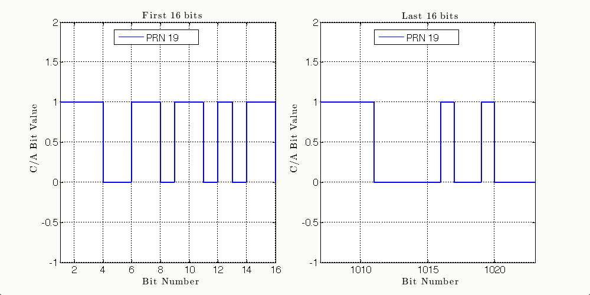 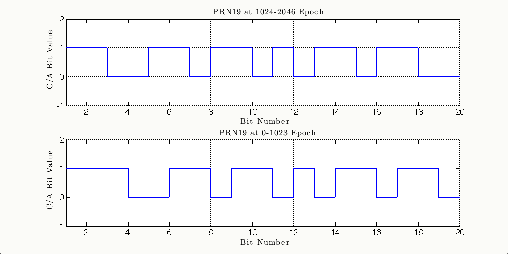 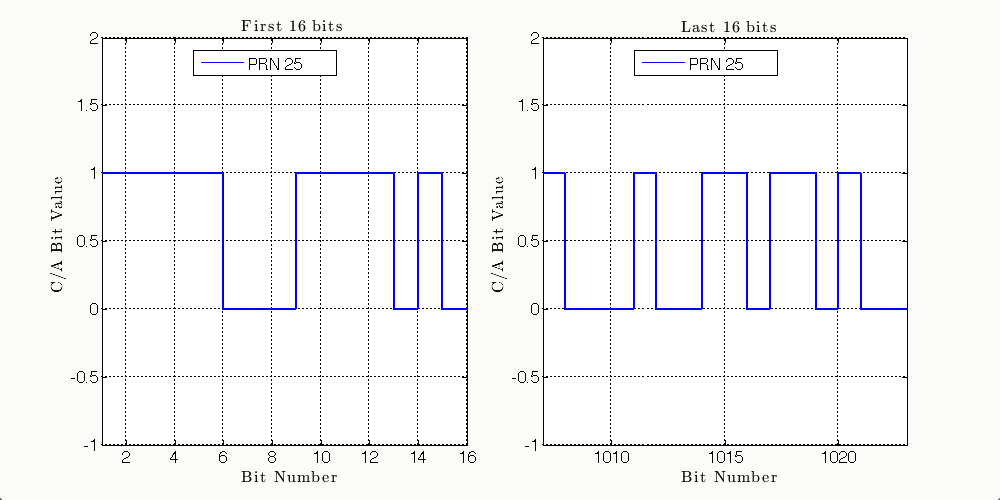 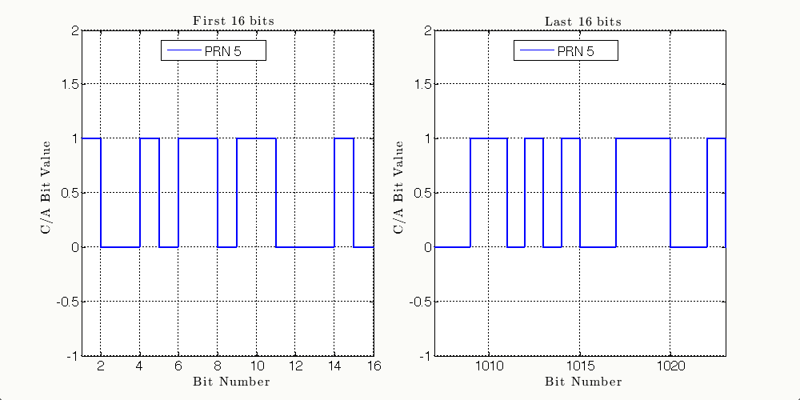
Problem 2
2a: Plot autocorrelation of C/A code 19
%--------------------------------------------- PRN19n = PRNNorm(PRN(19,:)); PRN19=PRN(19,:); [R19,lags] = xcorr(PRN19n); figure() plot(lags,R19); set(gcf,'Color',figColor, 'Position',[10+gcf*10 sh-600-gcf*10 500 500]) title('PRN 19 Autocorrelation');xlabel('Lag');ylabel('Correlation');legend('R^{(19)}'); %--------------------------------------------- % 2b: Plot autocorrelation of C/A Code 19 delayed by 200 chips %--------------------------------------------- PRN19n_200 = [PRN19n(end-199:end),PRN19n(1:end-200)]; [lags, R19_200] = cyc_corr2(PRN19n_200,PRN19n); figure() plot(lags,R19_200); set(gcf,'Color',figColor, 'Position',[10+gcf*10 sh-600-gcf*10 600 500]) title('PRN 19 Cyclic Cross With 200 chip Lag PRN 19');xlabel('Lag'); ylabel('Correlation');legend('R^{(19,19_{-200})}'); fprintf('>>>>>>>>>>>>>>>>>>>>>>>> Problem 2 >>>>>>>>>>>>>>>>>>>>>>>>>>>>>'); fprintf('\nProblem 2b:\n') fprintf('\tThe cross correlation puts the correlation between the C/A') fprintf('\n\t 19 and delayd C/A 19 at exactly 200 away from 0. This is \n') fprintf('\twhat intuition says it should be, as we induced a 200 chip delay\n') %--------------------------------------------- % 2c: Plot autocorrelation of C/A Code 19 with C/A Code 25 %--------------------------------------------- PRN25n = PRNNorm(PRN(25,:)); [lags, R25_R19] = cyc_corr2(PRN19n,PRN25n); figure() plot(lags,R25_R19); set(gcf,'Color',figColor, 'Position',[10+gcf*10 sh-600-gcf*10 600 500]) title('PRN 19 Cyclic Cross PRN 25');xlabel('Lag'); ylabel('Correlation');legend('R^{(19,25)}'); fprintf('\nProblem 2c:\n') fprintf('\tThe PRN19/PRN25 cross correlation yields pretty much just white') fprintf('\n\tnoise. There is no correlation between the two signals, so \n') fprintf('\tas opposed to the plots in a) and b), there should be no spikes\n') fprintf('\tsince you can shift the signal by any amount to get the signals\n') fprintf('\tto match up\n') %--------------------------------------------- % 2d: Plot autocorrelation of C/A Code 19 with C/A Code 5 %--------------------------------------------- PRN5n = PRNNorm(PRN(5,:)); [lags, R5_R19] = cyc_corr2(PRN19n,PRN5n); figure() plot(lags,R5_R19); set(gcf,'Color',figColor, 'Position',[10+gcf*10 sh-600-gcf*10 600 500]) title('PRN 19 Cyclic Cross PRN 5');xlabel('Lag'); ylabel('Correlation');legend('R^{(19,5)}'); fprintf('\nProblem 2d:\n') fprintf('\tThe PRN19/PRN5 cross correlation yields pretty much just white') fprintf('\n\tnoise. This is the same as in part c). There is no shift that \n') fprintf('\twill allow the two signals to properly correlate\n') %--------------------------------------------- % 2e: Correlate 3 summed and delayed signals %--------------------------------------------- x1 = delayPRN(PRN(19,:),350); x2 = delayPRN(PRN(25,:),905); x3 = delayPRN(PRN(5,:),75); [lags, R5_25_19_19] = cyc_corr2(PRN19n,PRNNorm(x1+x2+x3)); figure() plot(lags,R5_25_19_19); set(gcf,'Color',figColor, 'Position',[10+gcf*10 sh-600-gcf*10 700 500]) title('Cyclic Cross $ \Sigma(PRN5_{-75} PRN19_{-350} PRN25_{-905}$)');xlabel('Lag'); ylabel('Correlation');legend('R^{(19,(5_{-75}+9_{-350}+25_{-905}))}'); fprintf('\nProblem 2e:\n') fprintf('\tThe PRN19/(x1+y1+z1) correlation is exactly where I expect.\n') fprintf('\n\tEven when adding signals, the summed signal correlates with \n') fprintf('\tC/A 19 at the 350 chip offset. C/A 19 is still in the summed\n') fprintf('\tsignal, just shifted by 350 chips. So the plot matches intuition\n') %--------------------------------------------- % 2f: Add noise %--------------------------------------------- noise = 4*randn(1,1023); figure();subplot(4,1,1) plotBinaryWave(x1);ylabel('$x_1$');axis([0 1023 -3 3]) lines = sort(findobj(gca,'Type','line'));set(lines, 'LineWidth',1) subplot(4,1,2) plotBinaryWave(x2);ylabel('$x_2$');axis([0 1023 -3 3]) lines = sort(findobj(gca,'Type','line'));set(lines, 'LineWidth',1) subplot(4,1,3) plotBinaryWave(x3);ylabel('$x_3$');axis([0 1023 -3 3]) lines = sort(findobj(gca,'Type','line'));set(lines, 'LineWidth',1) subplot(4,1,4) plot(noise);ylabel('noise');axis([0 1023 -1 2]) lines = sort(findobj(gca,'Type','line'));set(lines, 'LineWidth',1) set(gcf,'Color',figColor, 'Position',[10+gcf*10 sh-600-gcf*10 800 700]) %--------------------------------------------- % 2g: Add noise and correlate %--------------------------------------------- [lags, R5_25_19_19_N] = cyc_corr2(PRN19n,PRNNorm(x1+x2+x3+noise)); figure() plot(lags,R5_25_19_19_N);set(gcf,'Color',figColor, 'Position',[10+gcf*10 sh-600-gcf*10 700 500]) title('Cyclic Cross $ \Sigma(PRN5_{-75} PRN19_{-350} PRN25_{-905}$ Noise)');xlabel('Lag'); ylabel('Correlation');legend('R^{(19,(5_{-75}+9_{-350}+25_{-905}+Noise))}'); fprintf('\nProblem 2e:\n') fprintf('\tThe PRN19/(x1+y1+z1+noise) correlation is still where I expect.\n') fprintf('\n\tEven when adding noise and multiple signals, I can still pull \n') fprintf('\tOut a correlation between the original C/A 19 shifted signal and C/A 19\n') fprintf('\tI am not surprised that this can be done, since it is the basis\n') fprintf('\tfor our ability to sort out multiple signals on the same frequency\n') fprintf('\tbut I will say I am very impressed that it works so well\n') fprintf('\n\tThis shows how robust cross correlation is to noisy, overlayed signals\n') fprintf('\tHOWEVER! I ran this sim many times, and occationally, there was no correlation\n') fprintf('\tevident. I guess this is the nature of noise! Sometimes it is \n') fprintf('\tprecisely the wrong kind of noise\n') %--------------------------------------------- % [lag,R19] = cyc_corr2(PRNNorm(PRN19),PRNNorm(PRN19)); % figure % subplot(1,2,1) % plot(R19); title('$R^{(19)}$'); % subplot(1,2,2) % plot(R19); title('Lag'); % set(gcf,'Color',[0.95 0.95 0.98], 'Position',[10 500 1000 500]) % subplotsqueeze(gcf,1.4,1);
>>>>>>>>>>>>>>>>>>>>>>>> Problem 2 >>>>>>>>>>>>>>>>>>>>>>>>>>>>> Problem 2b: The cross correlation puts the correlation between the C/A 19 and delayd C/A 19 at exactly 200 away from 0. This is what intuition says it should be, as we induced a 200 chip delay Problem 2c: The PRN19/PRN25 cross correlation yields pretty much just white noise. There is no correlation between the two signals, so as opposed to the plots in a) and b), there should be no spikes since you can shift the signal by any amount to get the signals to match up Problem 2d: The PRN19/PRN5 cross correlation yields pretty much just white noise. This is the same as in part c). There is no shift that will allow the two signals to properly correlate Problem 2e: The PRN19/(x1+y1+z1) correlation is exactly where I expect. Even when adding signals, the summed signal correlates with C/A 19 at the 350 chip offset. C/A 19 is still in the summed signal, just shifted by 350 chips. So the plot matches intuition Problem 2e: The PRN19/(x1+y1+z1+noise) correlation is still where I expect. Even when adding noise and multiple signals, I can still pull Out a correlation between the original C/A 19 shifted signal and C/A 19 I am not surprised that this can be done, since it is the basis for our ability to sort out multiple signals on the same frequency but I will say I am very impressed that it works so well This shows how robust cross correlation is to noisy, overlayed signals HOWEVER! I ran this sim many times, and occationally, there was no correlation evident. I guess this is the nature of noise! Sometimes it is precisely the wrong kind of noise
 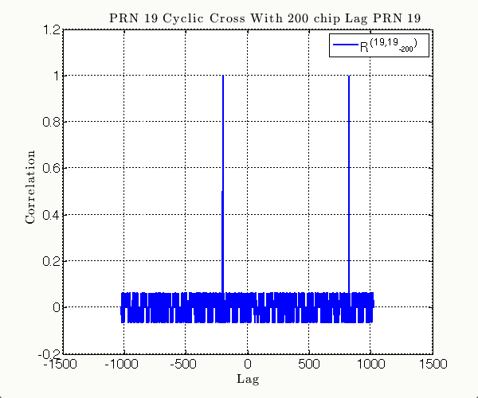 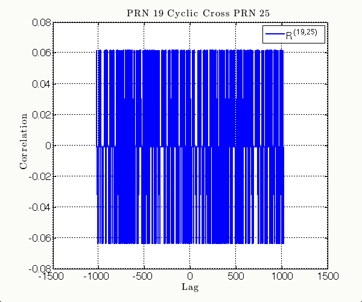 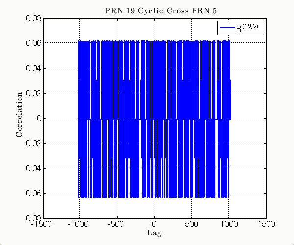 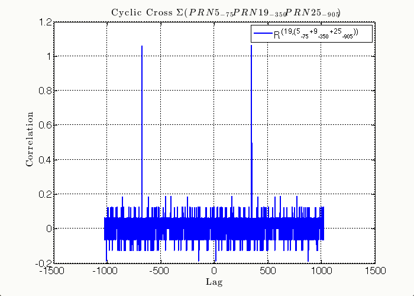
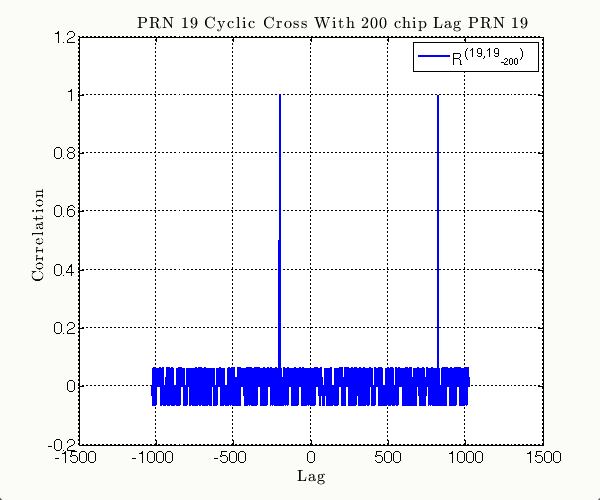 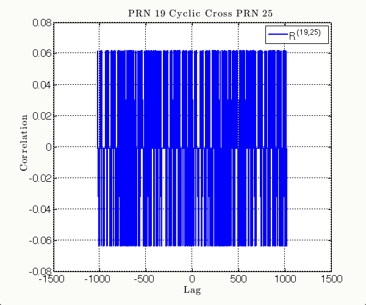 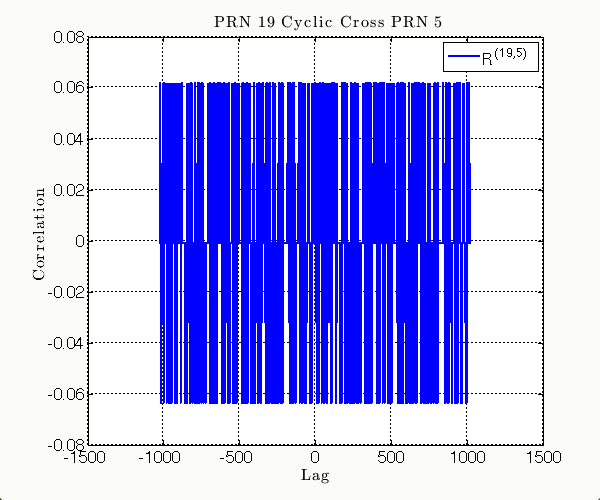 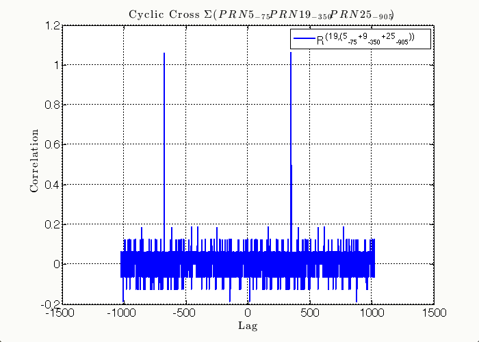